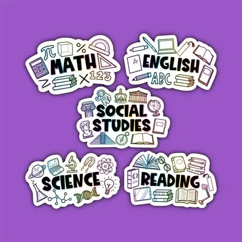

Building a Strong Foundation for K–8 Students
We provide tutoring for students in elementary and middle school who need additional academic support in Mathematics, Science, Social Studies or English. Students may need extra help understanding new concepts, completing their schoolwork or keeping up with their coursework.
Our tutoring can be aligned with the curriculum and learning material used by the student's school, with particular attention to commonly used Oregon standards and curricula.

Subjects for Elementary and Middle School
➗ Mathematics
K–8 mathematics helps students build the basic skills they need for more advanced mathematics. Students gradually move from numbers and basic operations to fractions, equations, geometry and problem-solving.
Standard used:
Oregon Common Core State Standards
Curriculums we commonly follow:
Common areas:
Numbers and operations, fractions, decimals, ratios, percentages, equations, geometry, measurement, data and problem-solving.
Note: We make personalized curriculum for students residing outside Oregon, homeschooled students, and students attending private and charter schools.
🔬 Science
K–8 science introduces students to the basic ideas of life science, physical science and Earth and space science. Students learn about the world around them through observation, experiments and scientific reasoning.
Standard used:
Oregon Next Generation Science Standards
Curriculums we commonly follow:
Common areas:
Life science, physical science, Earth and space science, ecosystems, matter, energy, forces, weather, Earth systems and scientific investigation.
Note: We make personalized curriculum for students residing outside Oregon, homeschooled students, and students attending private and charter schools.
📚 English
K–8 English helps students develop the reading, writing, speaking and language skills they use throughout school. Students work on understanding what they read and expressing their ideas clearly in writing.
Standard used:
Oregon Common Core State Standards for English Language Arts
Curriculums we commonly follow:
Common areas:
Reading comprehension, vocabulary, grammar, writing, spelling, sentence structure, literature, informational texts and communication skills.
Note: We make personalized curriculum for students residing outside Oregon, homeschooled students, and students attending private and charter schools.
🌎 Social Studies
K–8 social studies helps students understand history, geography, government and the communities around them. Students learn about important events, people and ideas while developing skills in reading, research and critical thinking.
Standard used:
Oregon History–Social Science Content Standards
Curriculums we commonly follow:
Common areas:
U.S. history, world history, geography, civics, government, economics, communities and important historical events.
Note: We make personalized curriculum for students residing outside Oregon, homeschooled students, and students attending private and charter schools.